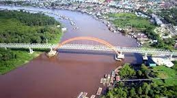

Central Kalimantan: The Heart of Borneo and Home of the Dayak
Central Kalimantan, located in the heart of Borneo Island, is a province known for its vast rainforests, diverse Dayak cultures, and unique natural environment. From the modern city of Palangka Raya to the remote villages and protected areas, Central Kalimantan offers a rich tapestry of experiences.
The Heart of Borneo's Rainforests:
Central Kalimantan's landscape is dominated by dense rainforests, playing a crucial role in global biodiversity and climate regulation:
The Richness of Dayak Cultures:
Central Kalimantan is the ancestral home of various Dayak groups, each with its own distinct language, customs, and traditions:
Natural Beauty and Biodiversity Conservation:
Central Kalimantan is committed to protecting its unique natural environment:
Economic Potential and Sustainable Development:
Central Kalimantan's economy is based on:
Central Kalimantan offers a unique opportunity to experience the heart of Borneo, with its rich Dayak culture, stunning rainforests, and diverse wildlife. Here's a deeper look:
Rainforests and Biodiversity Hotspot: Central Kalimantan's rainforests are a crucial part of Borneo's biodiversity and play a vital role in global climate regulation.
Peatland Ecosystems: The province's peatlands are unique ecosystems that store vast amounts of carbon and are important for water management.
Dayak Culture and Traditions: The diverse Dayak groups in Central Kalimantan have rich cultural traditions, including ceremonies, rituals, music, dance, and traditional crafts.
Rumah Betang (Longhouses): These traditional communal dwellings are a significant part of Dayak cultural heritage and social structure.
Tanjung Puting National Park and Orangutan Conservation: The park is a world-renowned center for orangutan conservation and research.
Sustainable Resource Management: Balancing economic development with sustainable resource management and environmental conservation is a key priority for the province.
Central Kalimantan is focused on balancing economic development with environmental conservation and the preservation of its rich Dayak cultural heritage. Sustainable development and responsible tourism are key priorities.
